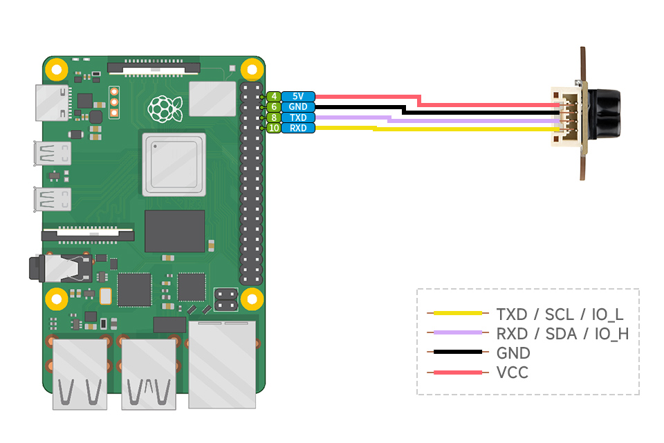
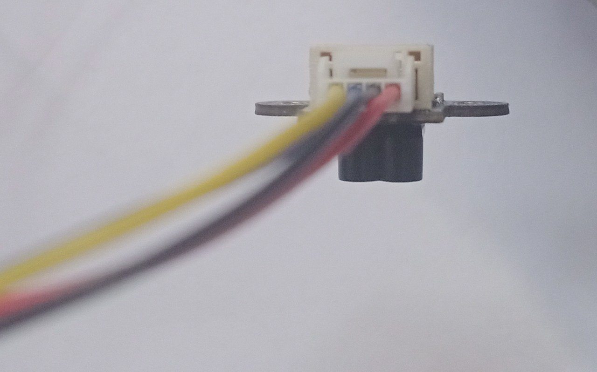
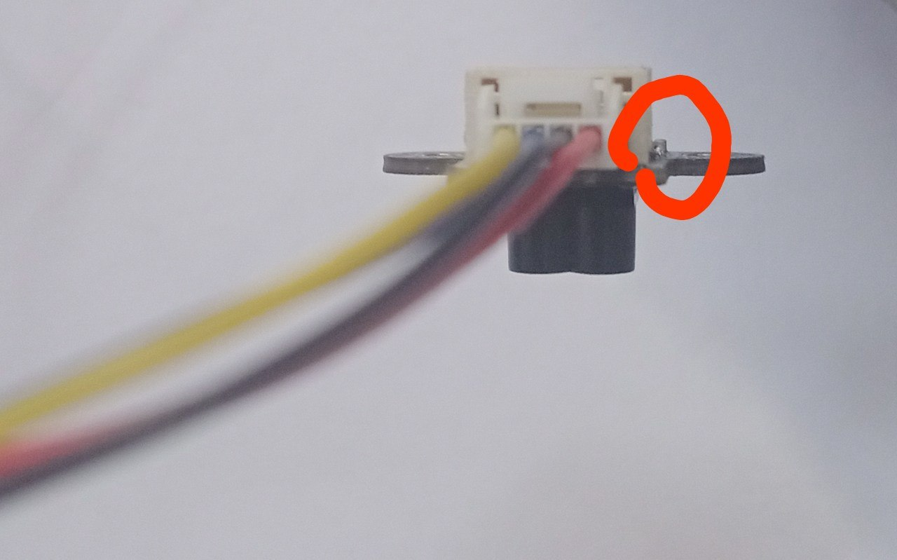

Chapter 1: linux instalation
Firstly, we need to gather all the equipment needed for the work: an SD card, an SD card reader (or a USB SD card adapter), a laptop, a Raspberry Pi 3B+, a USB Type-A cable, and the Sencor SKU 28761 with connector.
We open sd card memory with laptop, and clear it (formatting). If size of sd card too small, it can mean that we have other rasberi py os, and we need to change disk structure. For it we need press right mouse button to windows shorcut. Change option "Disk Manager". In this menu we can open more settings with right clisk on sd card menu, and clear sd card.
3.After it, we will download Raspberry Pi imager with this link https://www.raspberrypi.com/software/
After instaling imager, we need to change in Raspberry Pi imager our operation system Raspberry Pi OS Legacy 32-bit
Configure system befor instaling Name: Maksym; password: 1234; time Helsinki capital Helsinki localization ua (but i think this option doesn't metter) ssh on Also, we need to write down our Wi-Fi settings (network name and password), because SSH will not work without them. The Raspberry Pi will use the hostname specified in the settings (for example, Maksym in my case), and we can identify it by that name.
If you do not have access to the Internet, you can use your phone's Wi-Fi hotspot. Keep in mind that some Wi-Fi networks may block SSH connections.
I scanned the IP addresses using WiFiman on Android because it does not require access to your location. Some Wi-Fi scanner applications for Windows may contain malware and can be dangerous.
After needfull ip adress was found, we need to write command in cmd ssh username@raspbery_ip_adress example of command: ssh maksym@192.168.31.251
After running the command, enter your password in console and press "Enter" on keyboard.
If everything is coreect, you should see something like this: maksym@Maks:~ $
Chapter 2: Lidar conncetion

This drowing shows us wiring between SKU 28761 and the Raspberry Pi 3B+ via uart. The diagram shows a Raspberry Pi 4 Model B, but the four pins we need are located in the same positions on the Raspberry Pi 3B+.

Here, you can see the capacitor. The VCC pin is located on this side and should be connected to the +5V pin on the Raspberry Pi. To the left of the VCC pin is the GND pin. Connect it to GND on the Raspberry Pi. Next, connect the Raspberry TX pin, followed by the RX pin, as shown in the previous image.
This sencor doesn't have led or other indicators of work, and we can to detect it's work only with code, or toching (it will be a little warm)
Also, you can read more about conections by this link: https://www.waveshare.com/tof-laser-range-sensor-mini.htm?srsltid=AfmBOoq7MHUcPWnI8b9-EXzjx9gurMEgyY4MUpDriKYHCVpLBbaeAQsS
Chapter 3: Reading lidar data
Serial communication parameters:
| Parameter | Value |
|---|---|
| Interface | UART (TTL, 3.3 V logic) |
| Baud Rate | 921600 bps (default) |
| Data Bits | 8 |
| Parity | None |
| Stop Bits | 1 |
| Flow Control | None |
| Byte Order | Little Endian |
| Communication Mode | UART (Active Output / Query Output) |
| Update Rate | Up to 50 Hz |
Before start of reading data, we need to configure uart. We need to turn on it and remouve Bluethoth from uart pins.
we need to check uart
maksym@Maks:~ $ ls -l /dev/serial0
usually, we will reciwe this result:
lrwxrwxrwx 1 root root 5 Jul 27 11:05 /dev/serial0 -> ttyS0 ttyS0 is a mini-uart, and we need to change this status.
We should to open configs, and write target parameters in the end of this file: maksym@Maks:~ $ sudo nano /boot/firmware/config.txt
Write this in the end of file: enable_uart=1 dtoverlay=disable-bt After, we need to press contrl x, and save changes (press y, anf Enter on the keyboard)
Also, we need to disable bluethoth in other way: maksym@Maks:~ $ sudo systemctl disable hciuart
And reboot system after it: maksym@Maks:~ $ sudo reboot
Connect to our device: ssh username@raspbery_ip_adress example of command: ssh maksym@192.168.31.251
Enter a password:
example of command:
1234
After all, we need to create our python files with our code for reading data:
maksym@Maks:~ $ sudo nano uart_tof_reader.py
After writing code in this file, we can start it with command: maksym@Maks:~ $ python3 uart_tof_reader.py
Example of output: Дистанция: 0.657 м | Сигнал: 100 | Точность: 255 см | Статус: OK Дистанция: 0.657 м | Сигнал: 100 | Точность: 255 см | Статус: OK Дистанция: 0.656 м | Сигнал: 100 | Точность: 255 см | Статус: OK Дистанция: 0.656 м | Сигнал: 100 | Точность: 255 см | Статус: OK
Chapter 4: Analyze lidar data
maksym@Maks:~ $ python3 3_option_ofSKU28761.py
In the start of program, we can change mode:
Выберите режим работы: 1 - Мин / макс / среднее за последние 100 измерений 2 - Обнаружение объекта ближе 200 мм 3 - Обнаружение объекта ближе 1.5 м 4 - Фильтр выбросов + скользящее среднее
example of output: Дистанция: 0.657 м | Окно: 94/100 | Мин: 0.656 м | Макс: 0.658 м | Среднее: 0.657 м Дистанция: 0.657 м | Окно: 95/100 | Мин: 0.656 м | Макс: 0.658 м | Среднее: 0.657 м Дистанция: 0.657 м | Окно: 96/100 | Мин: 0.656 м | Макс: 0.658 м | Среднее: 0.657 м
example of output: Дистанция: 0.656 м | Близко (< 200 мм): False Дистанция: 0.657 м | Близко (< 200 мм): False Дистанция: 0.657 м | Близко (< 200 мм): False Дистанция: 0.656 м | Близко (< 200 мм): False
example of output: UART порт /dev/serial0 открыт на скорости 921600 бод Дистанция: 0.657 м | Скользящее среднее (1/100): 0.657 м Дистанция: 0.657 м | Скользящее среднее (2/100): 0.657 м Дистанция: 0.657 м | Скользящее среднее (3/100): 0.657 м Дистанция: 0.658 м | Скользящее среднее (4/100): 0.657 м
Thank you for atention!